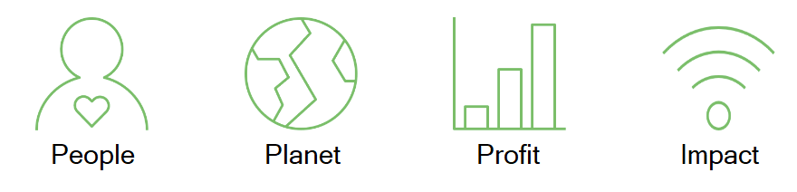
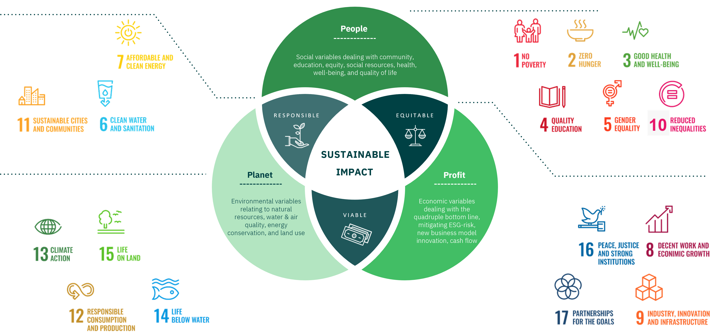
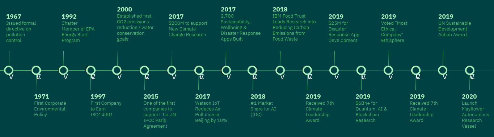
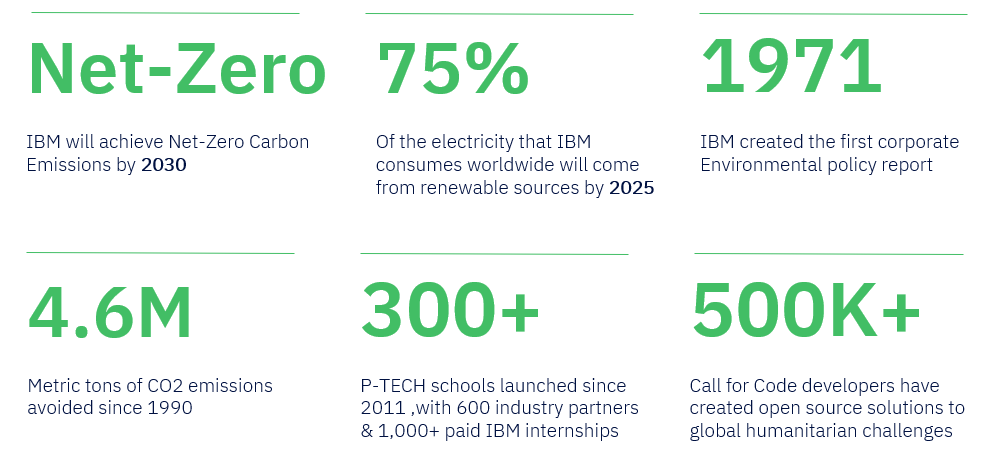
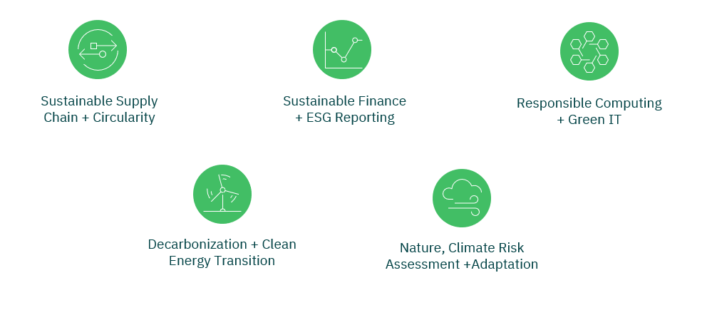

We Are The Sustainability Technologists.
IBM is architecting change for business and society with the promise of sustainable technology, differentiated services, ethical innovation, and our ecosystem of partners.
Our mission is to advance the quadruple bottom line.
IBM believes Sustainable Supply Chains should be Responsible, Equitable, and Viable
50+ Years of Sustainability Leadership
IBM's Commitment to Sustainability
Turning Sustainability Ambition into Action
Offerings | IBM Garage, Strategy & Experience
(Click any of the green logos to begin)